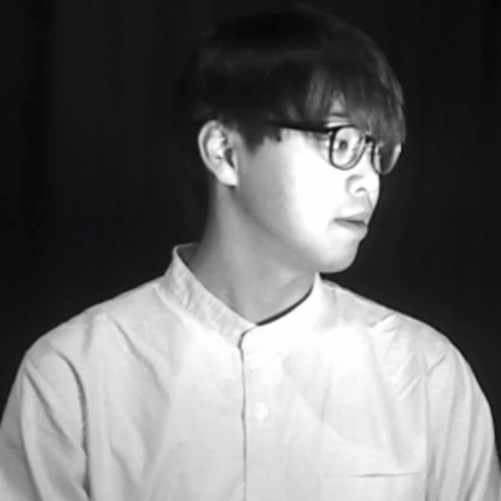

Profile
Name: Kosuke Shimizu
Affiliation: University of Tsukuba, School of Informatics, College of Media Arts, Science and Technology
Research Interests: Technology-Enhanced Learning, Human-Computer Interaction
Research Areas: Cognitive sciences; Learning support systems; Sensitivity informatics; Human interfaces and interactions
Education
- University of Tsukuba (Apr 2024–Present)
- Yamagata Prefectural Touohgakkan Junior and Senior Highschool (Apr 2021–Mar 2024)
Recent Publications
- Floating Captions: Eyetracking-based Context-aware Captioning System for Immersive VR Contents (ETRA 2025)
- The Effect of an Avatar on Gaze Guidance: An Eye-Tracking Study of Historical Photograph Appreciation (HAI 2025, Poster)
- Emotion Overflow: An Interactive System to Represent Emotion in Fluid Dynamics (INTERACTION 2025)
- Emotion Overflow: an Interactive System to Represent Emotion with Fluid (UIST 2024)
- MoodGroove: テキストと身体動作による対話型音楽生成・編集システム (WISS 2024)
- 大和歌VR Recorder (VR学会大会 2024)
- Effects of Binaural Audio on English Vocabulary Learning (ICCE 2022)
Memberships
- Virtual Reality Society Japan
- Institute of Electrical and Electronics Engineers
- Information Processing Society of Japan
- Association for Computing Machinery
Works
- Song of Akabane Whale (2024)
Exhibitions
- Mirai no Heiwa Katsudō-ten (Exhibition by Watanave Lab, The University of Tokyo) — Nagasaki Atomic Bomb Museum, Aug 10–17, 2025
Contact
For details see ksk432.com.
Twitter/X: @hong_shui26288
Email: shimizu [at] ai.iit.tsukuba.ac.jp